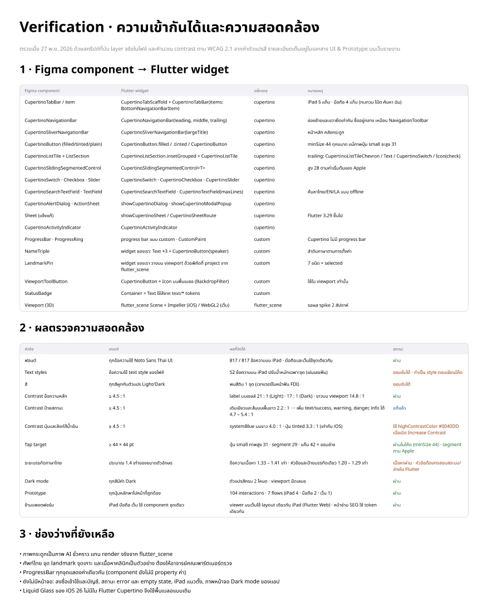

06. ผลตรวจความสอดคล้อง
ตรวจเมื่อ 27 พ.ย. 2026 ด้วยสคริปต์ที่อ่าน layer จริงในไฟล์ Figma (นับฟอนต์ text style สีที่ไม่ผูกตัวแปร และขนาดเป้าแตะ) และคำนวณ contrast ตามสูตร WCAG 2.1 จากค่าตัวแปรสีทั้งโหมด Light และ Dark ผลเดียวกันอยู่ในหน้า 06 Verification ของไฟล์ Figma

1. ผลตรวจ
| หัวข้อ | เกณฑ์ | ผลที่วัดได้ | สถานะ |
|---|---|---|---|
| ฟอนต์ | ทุกข้อความใช้ Noto Sans Thai UI | 817 / 817 ข้อความบนหน้า iPad | ผ่าน |
| Text styles | ข้อความใช้ text style ของไฟล์ | 52 ข้อความบน iPad นอก component ปรับน้ำหนักหรือขนาดเฉพาะจุด (เช่นเลขฟัน FDI) | ยอมรับได้ ทำเป็น style ตอนเขียนโค้ด |
| สี | ทุกสีผูกกับตัวแปร | สีดิบ 1 จุด (เวกเตอร์ในหน้าฟัน FDI) | ยอมรับได้ |
| Component | ทุกหน้าประกอบจาก component ชุดเดียว | iPad ใช้ ListTile 65, Button 35, ViewportToolButton 42, LandmarkPin 39, Segment 57 instance ฯลฯ มือถือและเว็บใช้ชุดเดียวกัน | ผ่าน |
| Contrast ข้อความหลัก | ≥ 4.5 : 1 | label บนเซลล์ 21 : 1 (Light), 17 : 1 (Dark), ข้อความขาวบนแผง viewport 14.8 : 1, ข้อความรองบนแผง viewport 6.3 : 1 | ผ่าน |
| Contrast ข้อความรอง | ≥ 4.5 : 1 | secondaryLabel บนเซลล์ 3.4 : 1 (Light), 6.0 : 1 (Dark) | เท่ากับ iOS · ใช้กับข้อความประกอบเท่านั้น |
| Contrast ป้ายสถานะ | ≥ 4.5 : 1 | เดิมเขียว 2.2 : 1 และส้ม 2.2 : 1 บนพื้นขาว | แก้แล้ว เพิ่ม text/success #1A7230, text/warning #B83000, text/danger #B3000F, text/info #0050A8 ได้ 4.7 – 5.4 : 1 บนพื้นป้าย |
| Contrast ปุ่มและลิงก์สีน้ำเงิน | ≥ 4.5 : 1 | systemBlue บนขาว 4.0 : 1, ปุ่ม tinted 3.3 : 1 (Light) · Dark 4.7 : 1 | เท่ากับ iOS · ในโค้ดใช้ highContrastColor #0040DD เมื่อผู้ใช้เปิด Increase Contrast |
| เป้าแตะ | ≥ 44 × 44 pt | ภาพปุ่ม small สูง 31, segment 29, แท็บ 42 + ขอบล่าง 20 | ผ่านในโค้ด (CupertinoButton.minSize 44) · segment สูงตามค่าเริ่มต้นของ Apple |
| ระยะบรรทัดภาษาไทย | ประมาณ 1.4 เท่า | ข้อความเนื้อหา 1.33 – 1.41 · หัวข้อและป้ายบรรทัดเดียว 1.20 – 1.29 | เนื้อหาผ่าน · หัวข้อต้องทดสอบสระบนล่างใน Flutter |
| Dark mode | ทุกสีมีค่า Dark | ตัวแปรสีครบ 2 โหมด viewport มืดเสมอ | ผ่าน (ยังไม่มีภาพหน้าจอ Dark) |
| Prototype | ทุกปุ่มหลักไปหน้าที่ถูก | 102 จุดคลิก 7 flow ไม่มีปลายทางที่หาย | ผ่าน |
| ข้ามแพลตฟอร์ม | ใช้ token และ widget ชุดเดียว | viewer บนเว็บใช้ layout เดียวกับ iPad · หน้าอ่าน HTML ใช้ token สีและตัวอักษรเดียวกัน | ผ่าน |
2. สิ่งที่แก้ระหว่างตรวจ
- Contrast ป้ายสถานะ เพิ่มตัวแปร
text/*แล้วเปลี่ยนข้อความสีเขียว ส้ม แดง และข้อความในป้ายสีน้ำเงิน ทั้งใน component และทุกหน้าจอ (15 จุด) - ชื่อบนแถบนำทางหายบนมือถือ ช่องซ้ายขวาของ
CupertinoNavigationBarเดิมกว้างคงที่ 240 ทำให้ชื่อตรงกลางเหลือ 1 px บนจอ 393 เปลี่ยนเป็นยืดเท่ากัน ชื่อจึงอยู่กลางทุกขนาดจอ ตรงกับพฤติกรรมNavigationToolbarของ Flutter - สีหลัก เปลี่ยนจากม่วงเป็น systemBlue ตามที่ Jedt ขอ (ทำก่อนตรวจ)
- ตัดเลนส์วิชาชีพ ตามที่ Jedt ขอ: ลบหน้าเลือกวิชาชีพใน onboarding, แถวเลนส์ในหน้า ฉัน และตัวแปรสี
lens/*แล้วเปลี่ยนแถบเลนส์ในหน้าจุดคลินิกเป็น 4 หมวด
3. ช่องว่างที่ยังเหลือ
- ภาพกระดูกเป็นภาพ AI ชั่วคราว ต้องแทนด้วย render จาก flutter_scene หลัง spike
- ศัพท์ไทย จุด landmark จุดเกาะ และเนื้อหาคลินิกเป็นตัวอย่าง ต้องให้อาจารย์คณะพาร์ตเนอร์ตรวจ
- ProgressBar ทุกจุดแสดงค่าเท่ากัน เพราะ component ยังไม่มี property ค่า
- ยังไม่มีหน้าจอ: ลงชื่อเข้าใช้และบัญชี, error และ empty state, iPad แนวตั้ง, ภาพหน้าจอ Dark mode, หน้ามือถือ "ฉัน"
- ยังไม่ได้ทดสอบกับผู้ใช้จริง แผนคือสัมภาษณ์นักศึกษา 15 คนในเดือนที่ 1 ตาม roadmap แล้วใช้ prototype นี้เป็นเครื่องมือทดสอบ